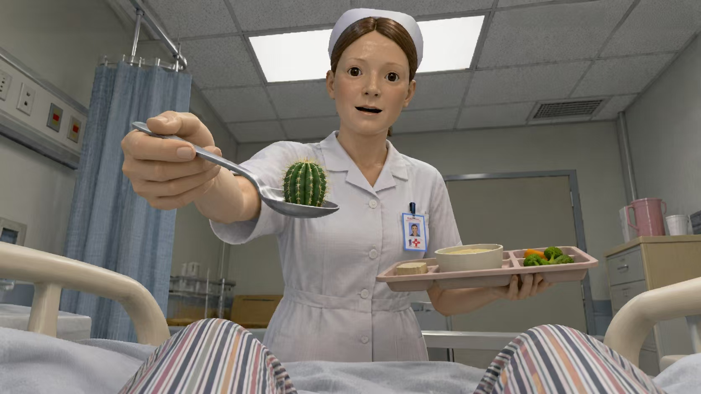
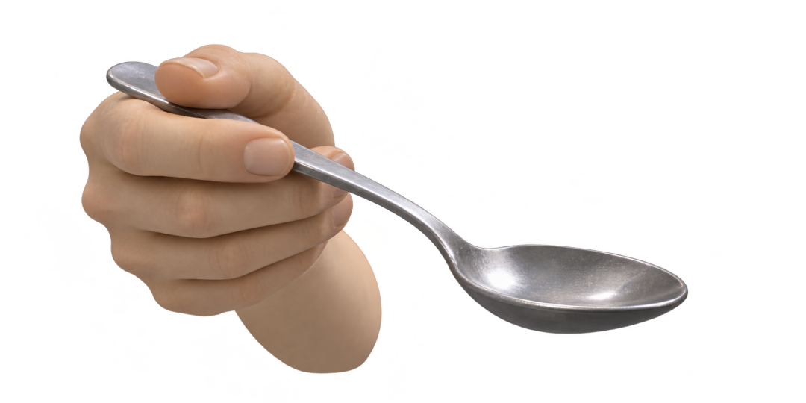
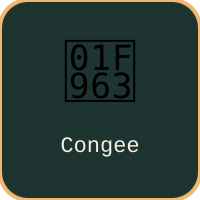
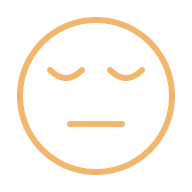
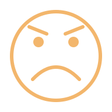
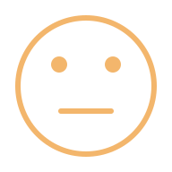

Expression Feeding
SCORE 0
DISCOMFORT


NO FACEnot detected
Loading…
combo ×0



MediaPipe 0.10.18 · single face · Developer baseline + session player correction
Five shared calibration steps, 1.5 seconds each. Median/P75 estimates player offset and amplitude without changing the baseline. Gain is limited to ±25%.
Corrected signal × weight = decision score. The top three signals are highlighted.
—
| Action / rank | Raw | Corrected | Weight | Weighted | Threshold | Gate | Status | Checks / reason |
|---|
| Signal | Value |
|---|
Decision score = corrected signal × baseline weight. Baseline-only mode uses raw signals. Thresholds follow the current configuration.
| State | Illustration | Gesture | Trigger | Priority / game behavior |
|---|---|---|---|---|
| VOMIT | Open your mouth wide. | Jaw opening after player correction and baseline weighting reaches the vomit threshold. | Highest priority. A new mouth-opening gesture is required during rescue; holding it does not repeatedly trigger. | |
| EYES CLOSED |  | Keep both eyes closed. | Both raw eye openness ratios must be at or below the configured limit (default 0.05). | Selected if vomit is inactive. Defense requires continuous closure for the configured time (default 500 ms). |
| SMILE | Raise both mouth corners. | Smile score reaches its threshold and is at least refusal score + 0.05. | Selected if vomit and eyes closed are inactive. | |
| REFUSAL |  | Lower your brows or mouth corners. | Raw refusal = max(average brow down, average mouth-corner down). Corrected, weighted refusal reaches its threshold while smile remains below its threshold. | Selected if vomit, eyes closed and smile are inactive. |
| NEUTRAL |  | Relax your face. | A face is detected, but none of the four actions meets all conditions. | Fallback classification, not an independent model score. |
| NO FACE | Face is outside the frame or cannot be detected. | An actual inference returns no valid face. | Not ranked. Gameplay reuses the latest valid face briefly and marks it lost after 400 ms. |